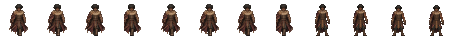
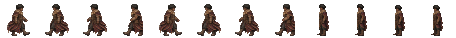
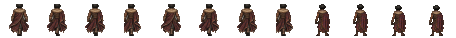

Source-sheet slices only, not the game renderer or a finished outfit. All styles and Home still need in-game review.
Front, side and back: eight walk frames followed by four idle frames. These temporary 38px review slices are not verified in Home.


